| 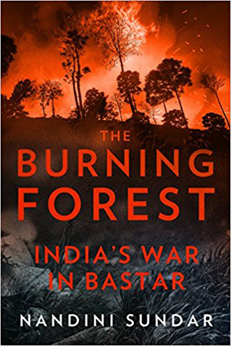 Click > Burning Forest |
Bibliography of South Asian Titles Worldcat lists these titles |
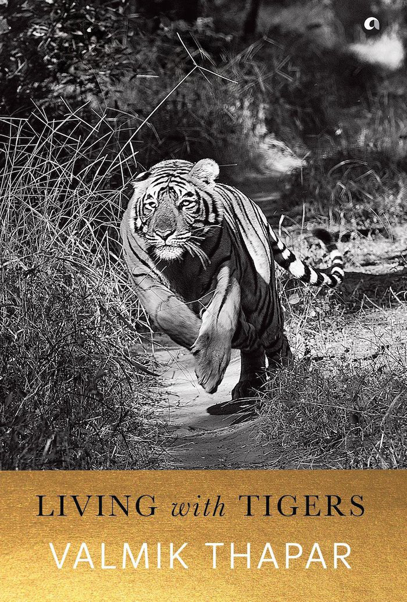 Click > tigers |
| 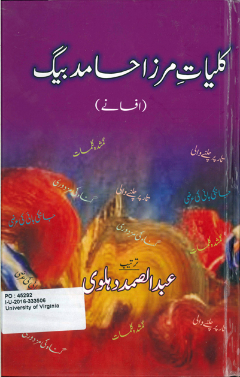 | Akhtaruliman. Faruqi, Athar, Anjuman Taraqqi-yi Urdu (Hind), 2016. ISBN: 9788171601769.
Contents: Contributed articles on the works of Akhtaruliman, 1915-1996, Urdu poet. Language: In Urdu. PK2200 2016333935 http://www.worldcat.org/oclc/950966165 |
| The burning forest : India's war in Bastar. Sundar, Nandini, 2016. ISBN: 9789386228000.
Contents: "In her meticulously researched book, The Burning Forest: India's War in Bastar, Nandini Sundar writes about the Maoist conflict in Bastar." She considers her "academia's role (or lack thereof) in studying the Maoist conflict, the politics of co-option by the state in the region, the maligned adivasis, the future and what it may bring to the region." [From Firstpost Manik Sharma, 2016 October] Language: English HX395 2016332094 http://www.worldcat.org/oclc/961035505 | |
| 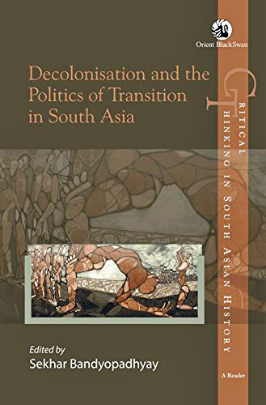 | Decolonisation and the politics of transition in South Asia. Sekhara Bandyopadhyaya , 2016. ISBN: 9788125062523.
Contents: Critical thinking in South Asian history. This volume interrogates the concept of decolonisation, which is often taken to mean a transfer of power from a colonial to an indigenous elite. However, decolonisation involved a much more complex historical experience for the people of the postcolonial nations. Language: English DS480 2016331418 http://www.worldcat.org/oclc/948975635 |
| 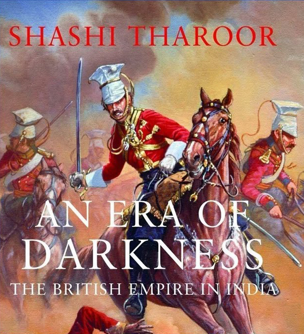 | An era of darkness : the British empire in India. Shashi Tharoor , 2016. ISBN: 9789383064656.
Contents: Tharoor has now converted that 'viral' Oxford union speech into a new book, `An Era of Darkness' (Aleph) in which he expands his theme of the evil, heartless, greedy and racist British mercilessly exploiting India, impoverishing its people, stealing its riches, destroying its social fabric and leaving it with a ruined economy, dysfunctional democracy and confused modernity, with even the so-called gains of colonialism like the English language and the railway network being only very mixed blessings. From Times of India January 6, 2017 Sagarika Ghose. Language: English DS463 2016334718 http://www.worldcat.org/oclc/974952895 |
| 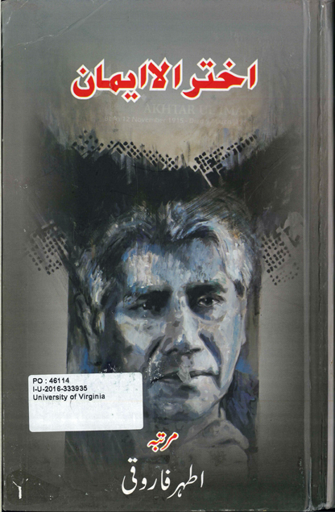 | Kulliyat-i Mirza Hamid Beg. Beg, Mirza Hamid, Abdussamad Dihlavi, 2016. ISBN: 9789386125255.
Contents: Short stories in Urdu. Mirza Hamid Beg has written 42 works such as these short stories and also biographical, bibliographic, and criticism books. Language: In Urdu. PK2659 2016333506 http://www.worldcat.org/oclc/966362977 |
| Living with tigers. Valmik Thapar , 2016. ISBN: 9789384067502.
Contents: Living with Tigers is a book by Valmik Thapar, the well-known conservationist who is mostly associated with the famous Ranthambore tigress Machhli. The book is divided into chapters, each dealing with Thapar's experiences with well-known tigers - Padmini, Ustad, Genghis, Broken Tooth and others. [from Bookstore Blog January 3, 2017]. Language: English DS485 2016330288 http://www.worldcat.org/oclc/966362971 | |
| 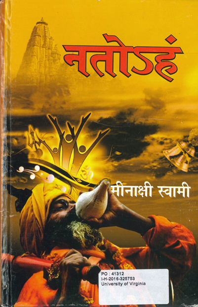 | Nato'ham. Minakshi Svami , 2016. ISBN: 9789383234486.
Contents: Novel based on the famous festival Kumbha Mela of Ujjain, Madhya Pradesh, India. Language: In Hindi. PK2099 2016325753 http://www.worldcat.org/oclc/953816767 |
| 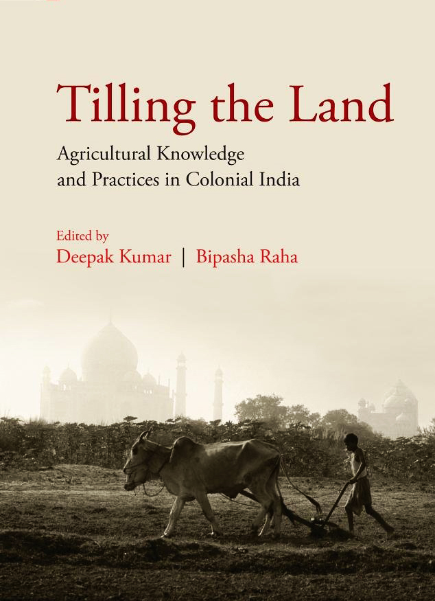 | Tilling the land : agricultural knowledge and practices in colonial India. Kumar, Deepak; Raha, Bipasha, 2016. ISBN: 9384092800.
Contents: This volume sheds light on systems of agricultural knowledge, inherited agricultural practices and allied activities, adoption of new knowledge as well as attempts at modernization, and the involvement and perception of the key historical players and agricultural pioneers who initiated the process of transformation of the system of agrarian production and the creation of a new agrarian knowledge basagainst the backdrop of burgeoning Western scientific knowledge. Language: English S471 2016334713 http://www.worldcat.org/oclc/962324585 |
| 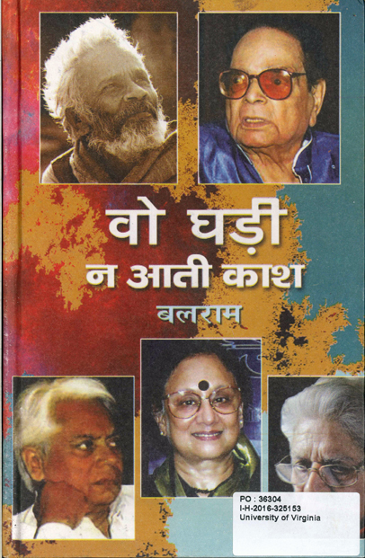 | Vo ghari na ati kasa. Balarama, 2016. ISBN: 9788176673204.
Contents: Collective biographies of 21 distinguished contemporary Hindi writers. Language: In Hindi. PK2034 2016325153 http://www.worldcat.org/oclc/944022634 |
| 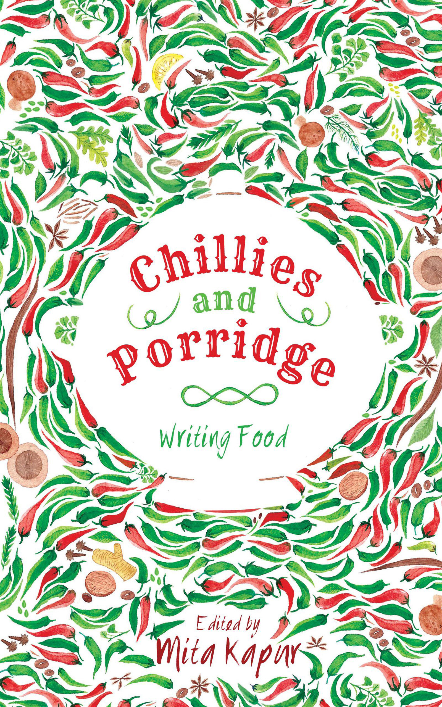 | Chillies and porridge : writing food. Mita Kapur, 2015. ISBN: 9789351772842.
Contents: The experience of food can mean many things to many people. A joyous mix of the familiar and the unfamiliar, the home-grown and the street-born, Chillies and Porridge is a celebration of that most vital ingredient of life: food. Features 23 essays on their food experiences. [EBay reviews]. Language: English GT2850 2015357360
http://www.worldcat.org/oclc/929825005 |
| 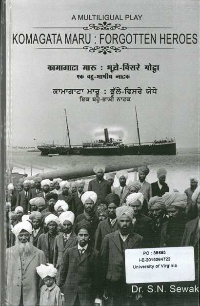 | Komagata maru : forgotten heroes. S. N. Sewak, 2015. ISBN: 9788171166565.
Contents: This play is a tribute to the heroic passengers of Komagata Maru who were turned away from Vancouver in July 1914 and were made to face bullets at Baj Baj Ghat near Calcutta in September 1914. [CityNews, August 2015]
. Language: In English, Panjabi and Hindi. DS479 2016364722
http://www.worldcat.org/oclc/931036343 |
| 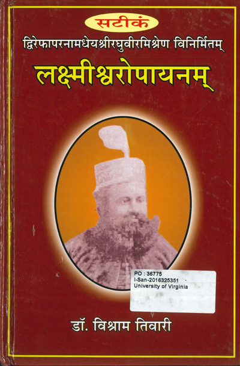 | Laksmisvaropayanam : satikam. Misra, Raghuvira, Tivari, Visrama, 2015. ISBN: 9789381721315.
Contents: Narrative poem on the life of Lakshmisvara Simha, -1898, King of Dharbhanga. Language: Hindi PK2040 2016325351 http://www.worldcat.org/oclc/957696795 |
| 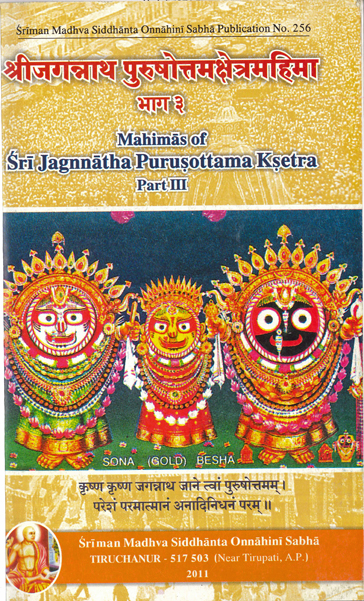 | Sri Jagannatha Purusottamaksetramahima = Mahimas of Sri Jagannatha Purusottama ksetra.
Tamraparni Subbachar Raghavendran, 2011.
Contents: On Hindu pilgrims and shrines in Puri, India ; texts from Vedic literature. Language: In Sanskrit. BL1243 2016315141 http://www.worldcat.org/oclc/939911456 |
Back to the top | |
Philip McEldowney
last update -
count -